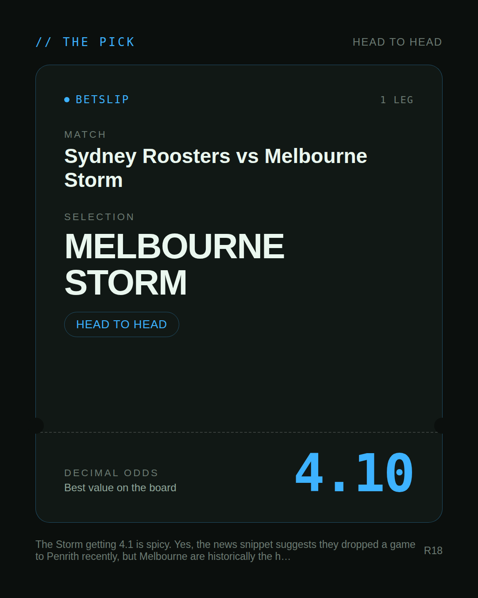
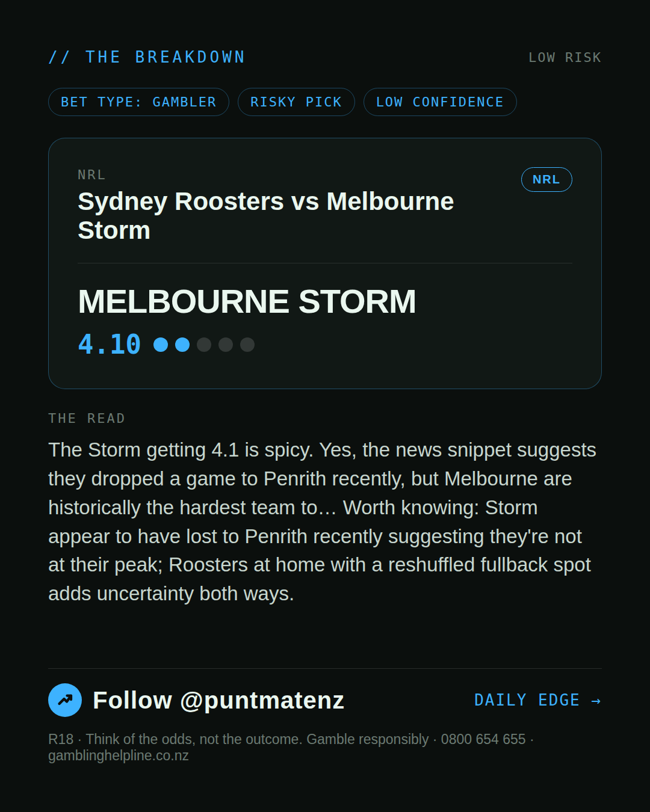
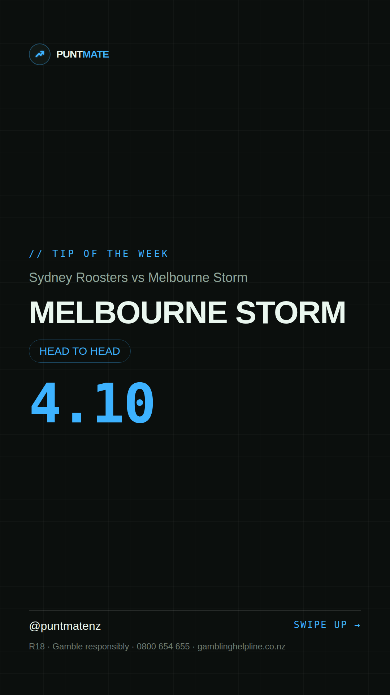

*🎯 PUNTMATE NZ — NRL* 🏟 Sydney Roosters vs Melbourne Storm *PICK:* MELBOURNE STORM *ODDS:* 4.10 (Head to Head) *BET TYPE: GAMBLER* _The Storm getting 4.1 is spicy. Yes, the news snippet suggests they dropped a game to Penrith recently, but Melbourne are historically the hardest team to… Worth knowing: Storm appear to have lost to Penrith recently suggesting they're not at their peak; Roosters at home with a reshuffled fullback spot adds uncertainty both ways._ Keep this one light — the value's there but so is the uncertainty. ────────────────── 📲 Join Telegram for daily picks R18 · Gamble responsibly · Problem Gambling Foundation NZ: 0800 664 262
🎯 NRL — Sydney Roosters vs Melbourne Storm MELBOURNE STORM @ 4.10 (Head to Head) BET TYPE: GAMBLER Bold call at a big price — this is a swing, not a certainty, but the upside is real. The Storm getting 4.1 is spicy. Yes, the news snippet suggests they dropped a game to Penrith recently, but Melbourne are historically the hardest team to… Keep this one light — the value's there but so is the uncertainty. Follow for daily value picks → @puntmatenz Problem Gambling Foundation NZ: 0800 664 262 #PuntmateNZ #SportsBetting #NZTAB #NRL
| has_pick | True |
| pick_id | 2026-07-16_Sydney_Roosters_vs_Melbourne_Storm |
| run_id | 29537109769 |
| generated_at | 2026-07-16T21:45:05.427069+00:00 |
| post_date | 2026-07-16 |
| match | Sydney Roosters vs Melbourne Storm |
| sport | rugbyleague_nrl |
| sport_label | NRL |
| market | Head to Head |
| selection | MELBOURNE STORM |
| odds | 4.10 |
| bet_type | GAMBLER_BET |
| bet_type_label | BET TYPE: GAMBLER |
| bet_type_reason | Bold call at a big price — this is a swing, not a certainty, but the upside is real. The Storm getting 4.1 is spicy. Yes, the news snippet suggests they dropped a game to Penrith recently, but Melbourne are historically the hardest team to… |
| classification | RISKY_PICK |
| risk | RISKY_PICK |
| confidence | LOW |
| confidence_label | LOW |
| final_explanation | The Storm getting 4.1 is spicy. Yes, the news snippet suggests they dropped a game to Penrith recently, but Melbourne are historically the hardest team to… Worth knowing: Storm appear to have lost to Penrith recently suggesting they're not at their peak; Roosters at home with a reshuffled fullback spot adds uncertainty both ways. |
| public_caution | Keep this one light — the value's there but so is the uncertainty. |
| theme | night |
| carousel_paths | ['data/review/2026-07-16_Sydney_Roosters_vs_Melbourne_Storm/cover.png', 'data/review/2026-07-16_Sydney_Roosters_vs_Melbourne_Storm/tip.png', 'data/review/2026-07-16_Sydney_Roosters_vs_Melbourne_Storm/breakdown.png'] |
| carousel_urls | ['https://raw.githubusercontent.com/kingofthecastle24/puntmate/main/data/cards/2026-07-16_Sydney_Roosters_vs_Melbourne_Storm_night_1_cover.png', 'https://raw.githubusercontent.com/kingofthecastle24/puntmate/main/data/cards/2026-07-16_Sydney_Roosters_vs_Melbourne_Storm_night_2_tip.png', 'https://raw.githubusercontent.com/kingofthecastle24/puntmate/main/data/cards/2026-07-16_Sydney_Roosters_vs_Melbourne_Storm_night_3_breakdown.png'] |
| story_path | data/review/2026-07-16_Sydney_Roosters_vs_Melbourne_Storm/story.png |
| story_url | https://raw.githubusercontent.com/kingofthecastle24/puntmate/main/data/cards/2026-07-16_Sydney_Roosters_vs_Melbourne_Storm_night_story.png |
| intended_platforms | ['telegram', 'instagram_feed', 'instagram_story', 'facebook'] |
| workflow_state | GENERATED |